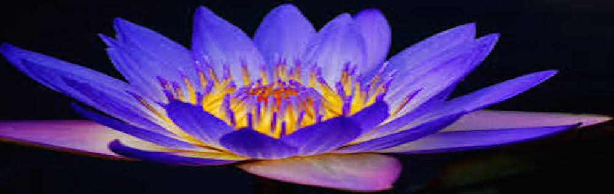
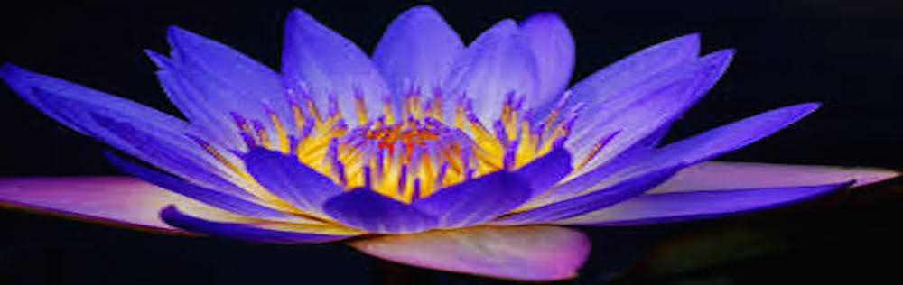

Project Caring and Sharing
 

Re-Entry Empowerment Programs
- Pre-Release Program
- Post-Release Program
- Pen Pal Ministry
Our Re-entry programs are designed to include the help of the entire community along with local government agencies, correctional agencies, businesses and faith-based groups. By partnering with local faith-based organizations, government agencies and other entities who have agreed to help in this initiative, the returning inmates are given a high chance of succeeding in putting their lives back together. We are provided program support by the Church of God in Christ, Inc. National Prision. he available programs are shown on the left and click on each one for more information.
Pre-Release Program
This program helps to provide support services prior to release to assure a smooth transition and speedy placement into home, family, and employment for individuals returning from incarceration.
Post-Release Program
This program provides consistent and caring volunteer mentors to guide, support and inspire ex-offenders to develop the attitudes and skills that will help them to become successful in their personal lives as members of their community and at work.
Pen Pal Ministry
Volunteers write incarcerated individuals in prison or jain at least once month